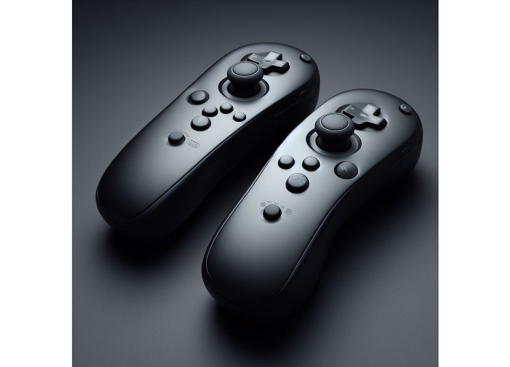
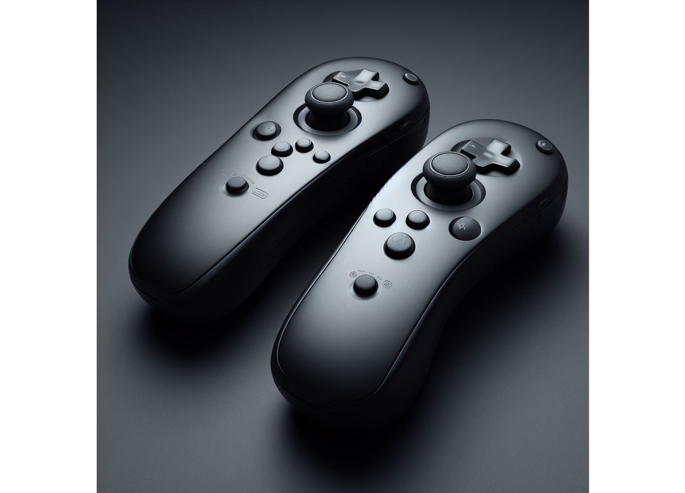

AimController
Be Like A Pro
Building a Controller with Motion Abilities for PC Gaming
It correspond to a program, receiving data from physical programmable circuit board, like Arduino or Teensy, where are connected sensors as inputs, for simulating outputs as Virtual Xbox Controller or Virtual Keyboard/Mouse or Interception or Dualshock4 Controller or vJoy Controller. No input lag, no delay, no stick drift, no gyro drift, no stuttering, fine aiming, adpated and custom control, competitive and enjoyable. You aiming or driving with competitive-immerssive-intuitive-natural-emotional controls with motion abilities, as well as pro player. It's possible to associate any controller or create one with motion sensors, like accelerometer and magnetometer (to replace IR cam and sensor bar), in order to task as Wiimote and Nunchuck, but exactly like Razer Hydra Controller in shape (without the magnetic ball), to play on PC at games with Steam. Let's see...

 

Considerations About the Program
The program is made for being more competitive than usual, but it ask a lot of experiences, and to want aiming or driving like in virtual reality games. The simple way is to connect sensors to Arduino or Teensy, and receive data in a program to simulate a virtual Xbox controller or virtual keyboard and mouse or interception or DS4 controller or virtual joystick. Then with a 3D printer, build an armor for a controller or two armors for a splitted controller. It's possible to print armors in a multimedia center or a public workshop with low cost. I have programed with Teensy, Arduino, IR cam, WebCam, Microphone, CronusMax, Cronus X-Aim, GIMX, GlovePie, Chiaki, PS Remote Play, Devreorder, Interception, Scp, ViGEm, vJoy, AirMouse, Keyboard, Mouse, Wiimote, Joycon, Joycon Charging Grip, Pro controller, DualShock4, Dualsense, Xbox controller, PPJoy controller, Six Axis controller... For all games, on Linux, Windows, Playstation, and Xbox. I have a lot of knowledges in controllers and motion controls, and so I can say that console isn't adapted to play games with motion controllers, because less than 10% of console games are playable with. PC is the ultimate platform to play games with motion controllers and to create one, because more than 90% of PC games are playable with. I prefer emulate inputs with sensors the controller I built, and simulate outputs with a program the Human Interface Device (HID) to play all games on PC. I choose this method because with microcontrollers or on consoles you can't have any accuracy. Also you prevent the built controller to be recognized and connected by games and launchers on PC like it's doing actually with console controllers and it's very weird. It have broke all the works I did with several decades on it. Another important thing, about Cronus and Titan adapters, is that console constructors are hating it to play on their consoles, and so potentially you will be forwarded on hacked lobbies from matchmaking, and it's weird controls how the adapters are running but also how games are configured on consoles, and finally comparing consoles to PC, you can have better settings in terms of optimization and security with a PC, like I did. There are nice tutorials, here and here on Six Axis controllers to start easy playing with motion controls without annoying setting it up. You can find here the driver for Flydigi controllers. You can use August LP310 Remote Airmouse, used normaly for Power Point presentation, but for Top Down Shooters or First Person Shooters, combined with a controller. The native support of controllers in PC games, not native controllers known as keyboard/mouse and Xbox controller, is a very bad idea, because it result in low optimization of games and low or bugged or not running handle of controllers like with DirectInput controllers or Dualsense, also it's not in favor of some developers who want practice on controller support, and it's a time consumer for game developers. I did better controller support than native controller support in games of game developers, and with better and infinite customizations. My goal for building a custom controller in terms of polling rates is to reach a number under 14 milliseconds, it's largely doable, and it's sufficient, because a game is caped generally at 30-60 FPS, a big screen have a latency of around 10 milliseconds, and the ping of a server is around 20 milliseconds, so there's no need to go far under and I already checked with a time watcher the polling rates, no need to eat one CPU for nothing, but just lagging. But it stay always better to simulate a Keyboad/Mouse, because of the deadzone unsignifiant, contrary to the deadzone of a controller, and sometimes very badly handle at the output of the deadzone too sensitive, but also the lowest sensitivity when aiming down sight not competitive at all, and almost impossible to have a good aim by tricking the sensitivities, or even the maximum sensitivity toggle after only a certain amont of timing at maximum path of the stick. I made the showcase here. The program is located under bin/release folder from the code source folder in the dedicated repository. You can check here to find the right repository with same name.